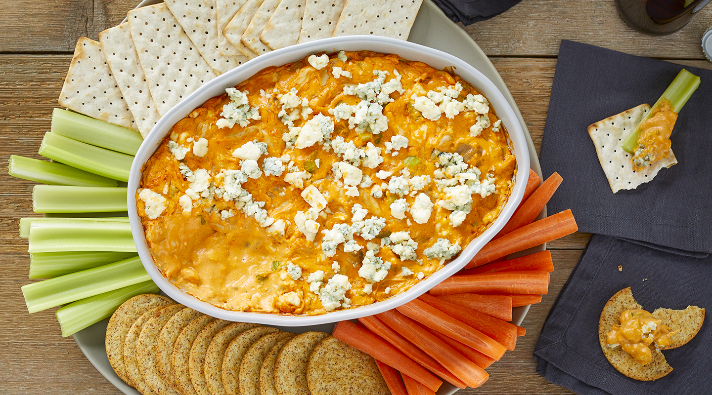

Buffalo Chicken Dip

Description
This tangy, creamy Buffalo chicken dip tastes just like Buffalo chicken wings! Perfect for parties and game day, this chicken dip is best served hot with crackers and celery sticks. Everyone loves the results!
Few appetizers bring a crowd together quite like warm, ooey-gooey, utterly irresistible Buffalo chicken dip. The Allrecipes community can't get enough of this easy Buffalo chicken dip with canned chicken — it has more than 4,000 rave reviews from happy home cooks. Find out what all the fuss is about with this top-rated recipe.
Buffalo Chicken Dip Ingredients
Here's what you'll need to make this top-rated Buffalo chicken dip with canned chicken:
- Chicken
This Buffalo chicken dip starts with two cans of chunk chicken, making it extra easy and affordable. Of course, you can substitute rotisserie chicken or shredded chicken breasts if you'd prefer.
- Cream Cheese
Make sure the cream cheese is softened for easy incorporation.
- Ranch Dressing
A cup of ranch dressing adds creaminess and tang.
- Hot Sauce
Hot pepper sauce (such as Frank's) turns up the heat, mimicking the spicy flavor of Buffalo chicken wings. Use more or less than the recipe calls for to suit your flavor preferences.
- Cheese
Cheddar cheese is melted into the dip, creating a satisfyingly gooey texture and cheesy flavor.
Directions
- Heat chicken and hot pepper sauce in a skillet over medium heat until heated through, 3 to 5 minutes. Stir in cream cheese and ranch dressing. Cook and stir until well blended and warm, 3 to 5 minutes.
- Mix in 1/2 of the Cheddar cheese, and transfer the mixture to a slow cooker. Sprinkle the remaining cheese over top.
- Cover and cook on Low until dip is hot and bubbly, about 35 minutes.
- Serve with celery sticks and crackers.